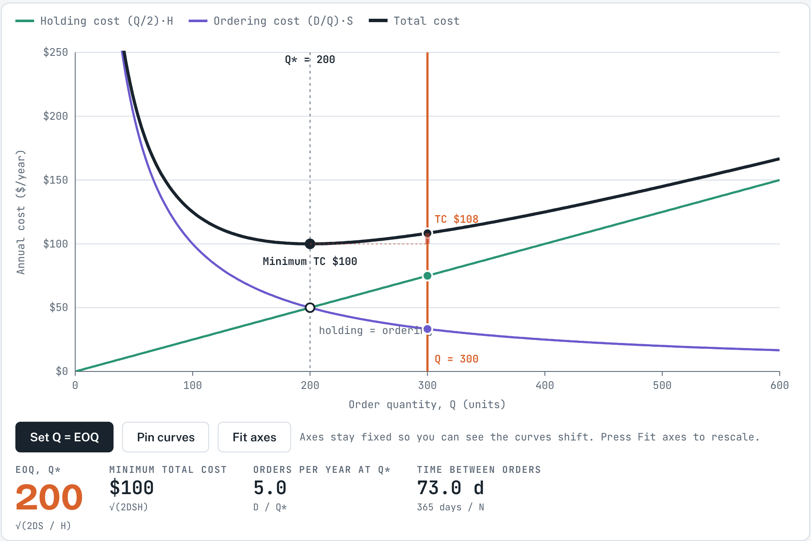
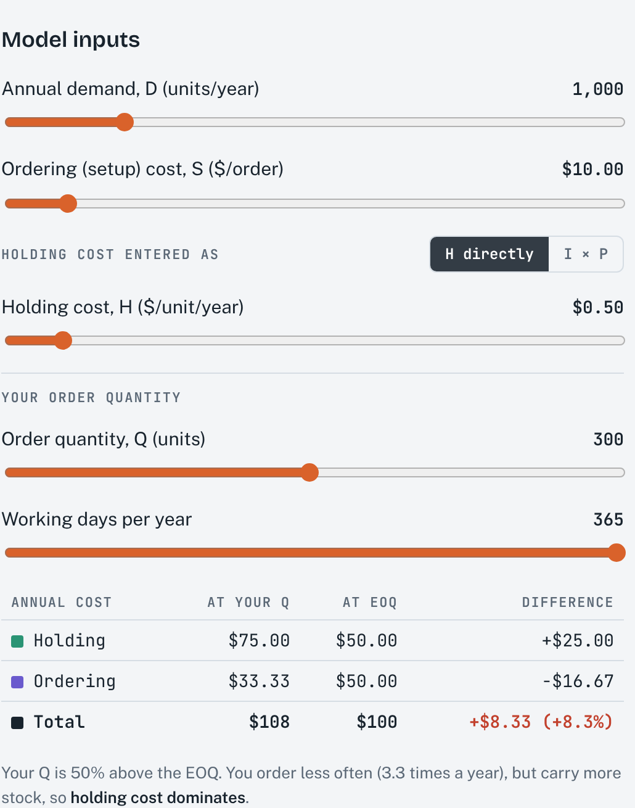
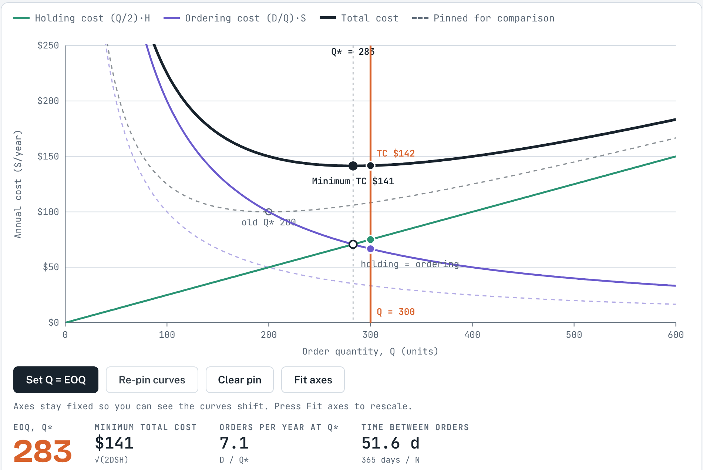

1About this simulation
How much should we order each time? Ordering in large batches means few orders, but a lot of stock sitting on the shelf. Ordering in small batches keeps stock low, but means many orders. The economic order quantity (EOQ) is the order size at which these two costs balance and the total annual cost is lowest.
This simulation draws the three cost curves (holding, ordering and total cost) against the order quantity. You can drag your own order quantity along the curves, change the demand and cost inputs, and pin the old curves to compare before and after.
After working through this guide, you should be able to:
- explain the trade-off between holding cost and ordering cost, and why total cost is U-shaped;
- calculate the EOQ, the minimum total cost, the number of orders per year and the time between orders;
- predict how the EOQ moves when demand, ordering cost or holding cost changes (the square-root effect);
- explain why total cost is flat near the EOQ, and calculate the cost of ordering more or less than the EOQ.
2Theory background
Assumptions of the basic EOQ model
- Demand is known, constant and independent of other items.
- The lead time is known and constant.
- Each order is received all at once (instantaneous receipt).
- There are no quantity discounts, so the purchase price does not depend on Q.
- The only variable costs are the cost of placing an order (setup or ordering cost) and the cost of holding stock (holding or carrying cost).
- Stockouts are avoided completely if orders are placed at the right time.
Notation
The notation is the same as in the course formula sheet.
| Symbol | Meaning |
|---|---|
| D | Annual demand (units/year) |
| S | Ordering or setup cost per order ($/order) |
| H | Holding cost per unit per year ($/unit/year) |
| I, P | Holding cost as a percentage of the unit price per year; unit price ($/unit), so H = I × P |
| Q, Q* | Order quantity; optimal order quantity (EOQ) |
| N | Number of orders per year |
| TC | Total annual cost of ordering and holding |
The two costs and the total
With constant demand, stock falls from Q to zero and is then replenished, so the average inventory is Q/2. Each unit held for a year costs H. The number of orders per year is D/Q, and each order costs S.
Holding cost rises in a straight line as Q grows, while ordering cost falls along a curve. Their sum, the total cost, is U-shaped. The purchase cost P × D is left out here because it is the same for every Q when there are no quantity discounts.
The economic order quantity
Total cost is lowest where the holding and ordering costs are equal. Setting (Q/2) × H = (D/Q) × S and solving for Q gives:
Worked example (default settings). D = 1,000 units/year, S = $10/order, H = $0.50/unit/year.
- Q* = √(2 × 1,000 × 10 / 0.50) = √40,000 = 200 units.
- Holding cost = (200/2) × 0.50 = $50 and ordering cost = (1,000/200) × 10 = $50, so TC* = $100.
- N = 1,000 / 200 = 5 orders per year. With 365 working days the time between orders is 365/5 = 73 days; with 250 working days it is 50 days.
How the EOQ responds to changes: the square-root effect
Because of the square root, the EOQ changes less than proportionally:
- If D or S doubles, Q* grows by √2 ≈ 1.41 (41%), not by 100%. Q* doubles only when D or S becomes four times larger.
- If H doubles, Q* falls to 1/√2 ≈ 0.71 of its old value. A higher holding cost means ordering smaller amounts more often.
- The minimum total cost TC* = √(2DSH) also grows with the square root of each input.
The flat bottom: why the EOQ is robust
Near Q* the total cost curve is very flat. The cost of using any other quantity Q can be expressed relative to the minimum:
| Q / Q* | 0.5 | 0.75 | 1 | 1.5 | 2 | 3 |
|---|---|---|---|---|---|---|
| TC above minimum | +25% | +4.2% | 0% | +8.3% | +25% | +67% |
Ordering 50% more than the EOQ costs only about 8% extra. This is good news in practice: demand and cost figures are estimates, and small errors in them hardly change the total cost. Note also that, for the same number of units away from Q*, ordering too little costs more than ordering too much (100 units below Q* = 200 costs +25%, 100 units above costs +8.3%).
3How to use the simulation
Getting started
- Set the Model inputs: annual demand D, ordering cost S and holding cost. Holding cost can be entered as H directly or as I × P (a percentage of the unit price).
- Choose your order quantity Q with the slider, or drag the orange line on the chart. Set Q = EOQ moves it to the optimum.
- Pin curves keeps a dashed copy of the current curves, so you can change an input and compare. Clear pin removes it.
- The axes stay fixed so that you can see curves shift. Press Fit axes to rescale them.
- Working days per year only affects the time between orders.
- The Check your understanding box generates new practice questions on the EOQ, minimum cost, orders per year and the cost of a non-optimal Q.
What you see

- Green line: holding cost (Q/2) × H. Purple curve: ordering cost (D/Q) × S. Black curve: total cost.
- Dotted vertical line and black dot: the EOQ and the minimum total cost. The open circle marks where holding cost equals ordering cost.
- Orange line: your order quantity Q, with its holding, ordering and total cost marked. The red bar shows the extra cost compared with the minimum.
- Statistics row: EOQ, minimum total cost, orders per year at Q* and time between orders, each with its formula underneath.

Try this
A. The trade-off
- With the default inputs, calculate Q*, TC* and N by hand. Then press Set Q = EOQ and check your answers.
- Set Q to 100, 200, 400 and 600 and complete the table below. At which Q are holding and ordering cost equal?
| Q | Holding cost | Ordering cost | Total cost | % above minimum |
|---|---|---|---|---|
| 100 | ||||
| 200 | ||||
| 400 | ||||
| 600 |
B. Moving the EOQ
- Press Pin curves, then double the annual demand to 2,000. Predict the new EOQ before you look. By what percentage did it change?
- Return D to 1,000. Predict, then test, the EOQ when S rises from $10 to $40, and when H rises from $0.50 to $2.00.

C. Holding cost as a percentage of price
- Switch to I × P. Check that I = 20% and P = $2.50 give the same H = $0.50 as before.
- Raise I to 40%. What is the new H, and what happens to the EOQ and the minimum cost? Why might a firm with a high cost of capital order smaller quantities?
- Change the working days per year from 365 to 250. What changes, and what stays the same?
4Check your understanding
- D = 1,200 units/year, S = $25 per order and H = $6 per unit per year. Calculate Q*, TC* and N. With 240 working days, how many days pass between orders?
- A product costs P = $20 and the holding cost rate is I = 25% per year. D = 2,000 units and S = $50. What is H, and what is the EOQ?
- If annual demand becomes four times larger, what happens to the EOQ and to the minimum total cost?
- The EOQ is 500 units. A manager orders 750 units each time. By what percentage is total cost above the minimum? What if the manager orders 250?
- With the default inputs (Q* = 200, TC* = $100), a supplier only accepts orders of at least 400 units. What is the total annual cost now, and how is it split?
- Explain in two or three sentences why the flat bottom of the total cost curve is useful for managers.
References
MSB255 Supply Chain and Operations Management: course materials. University of Stavanger.
Heizer, J., Render, B., & Munson, C. (2017). Operations Management: Sustainability and Supply Chain Management (12th ed.). Pearson.
Answers and expected resultsTry the exercises first, then open to check
Simulation results
| Run | Result |
|---|---|
| Defaults at Q* = 200 | Holding $50, ordering $50, TC* $100, N = 5.0, 73 days between orders (365 working days) |
| Q = 100 | Holding $25, ordering $100, total $125 (+25%) |
| Q = 400 | Holding $100, ordering $25, total $125 (+25%) |
| Q = 600 | Holding $150, ordering $16.67, total $166.67 (+67%) |
| D = 2,000 | Q* = 283 (+41%), TC* = $141, N = 7.1 |
| S = $40 | Q* = 400 (four times S doubles Q*), TC* = $200 |
| H = $2.00 | Q* = 100 (four times H halves Q*), TC* = $200 |
| I × P, I = 40% | H = 40% × $2.50 = $1.00; Q* = 141, TC* = $141 |
| 250 working days | Time between orders = 250 / 5 = 50 days; Q*, TC* and N are unchanged |
Check your understanding
- Q* = √(2 × 1,200 × 25 / 6) = √10,000 = 100 units. TC* = √(2 × 1,200 × 25 × 6) = $600 ($300 holding + $300 ordering). N = 1,200 / 100 = 12 orders. Time between orders = 240 / 12 = 20 days.
- H = I × P = 0.25 × $20 = $5 per unit per year. Q* = √(2 × 2,000 × 50 / 5) = √40,000 = 200 units.
- Both are multiplied by √4 = 2: the EOQ doubles and the minimum total cost doubles. N = D/Q* also doubles.
- Q/Q* = 1.5: ½ × (1.5 + 1/1.5) = 1.083, so about 8.3% above the minimum. Q/Q* = 0.5: ½ × (0.5 + 2) = 1.25, so 25% above.
- Holding = (400/2) × 0.50 = $100; ordering = (1,000/400) × 10 = $25; TC = $125, which is $25 (25%) above the minimum. Holding cost now dominates.
- Demand and cost figures are only estimates. Because total cost is flat near Q*, an order quantity that is somewhat off, or rounded to a convenient pack size, costs only a little more than the true optimum. The EOQ is therefore a robust guide rather than a number that must be hit exactly.